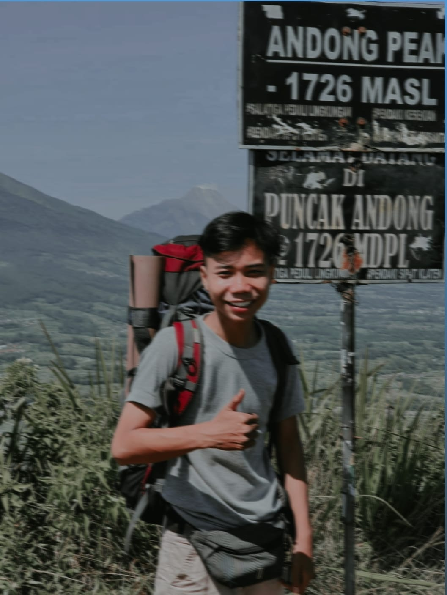
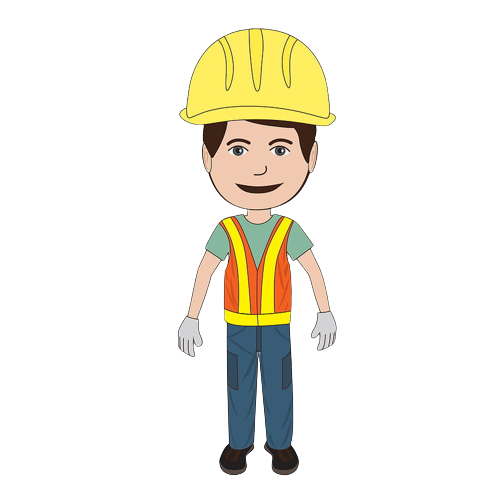

Tentang Saya
Nama saya ELANG ARIFADILLAH biasa dipanggil Elang, saya lahir di Pemalang pada tanggal 21-06-2003, yang merupakan anak pertama dari pasangan Yeyen dan Bukhori dan terlahir dari keluarga yang sederhana dan cukup. Saya sangat menyukai fotography, teknologi dan musik khususnya metal. Saya pun memiliki beberapa keahlian dibidang yang berbeda, beberapa keahlian tersebut dikarenakan waktu SMK saya mengambil jurusan mesin dan pada kuliah mengambil jurusan Informatika. Inilah saya yang sangat menyukai tantangan.
Keahlian
Saya memiliki beberapa keahlian di bidang yang bermacam, karena saya memiliki karakter yang memiliki rasa penasaran yang tinggi. keahlian saya sebagai berikut.

Keahlian
- Paham dan mampu mengoprasikan mesin mesin industri
- Paham tentang digital desain
- Paham tentang kamera dan photograpy, baik street photograph, wedding potograph dan lain lain
- Paham dan lancar mengoprasikan microsoft word / exel
- Paham tentang mesin Las (las listrik, argon dan patri)
- Paham dan lancar tentang mesin baik sepeda motor dan mobil
- Mampu bekerja dalam team dan dibawah tekanan
- Mampu berkomunakasi dengan baik
- Mampu dan bisa mengambil keputusan secara bijak
- Mampu dan cepat beradaptasi dengan lingkungan sekitar
Riwayat Pendidikan
-
2021 - Belum ditentukan
Universitas Mercubuana Yogyakarta, Teknik INFORMATIKA
Indeks Prestasi Kumulatif Semester 4: 3.420 / 4.00
-
2019 - 2021
SMK N 1 PETARUKAN
Jurusan Teknik Pemeliharaan Mesin Industri (TPMI)
-
2017-2019
SMP N 1 PETARUKAN
NEM: 2.40/3.00
-
2011-2017
SDN 09 PETARUKAN
NEM: 2.20/3.00